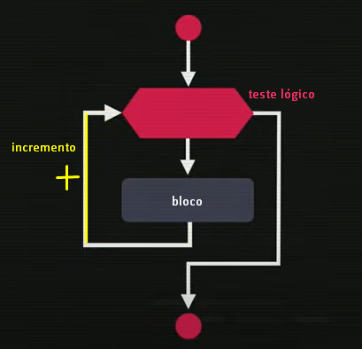
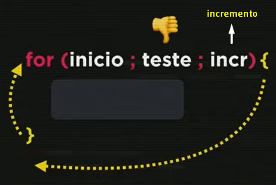
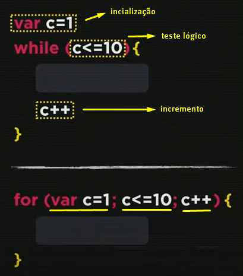
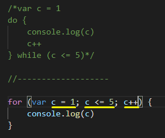
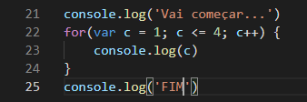
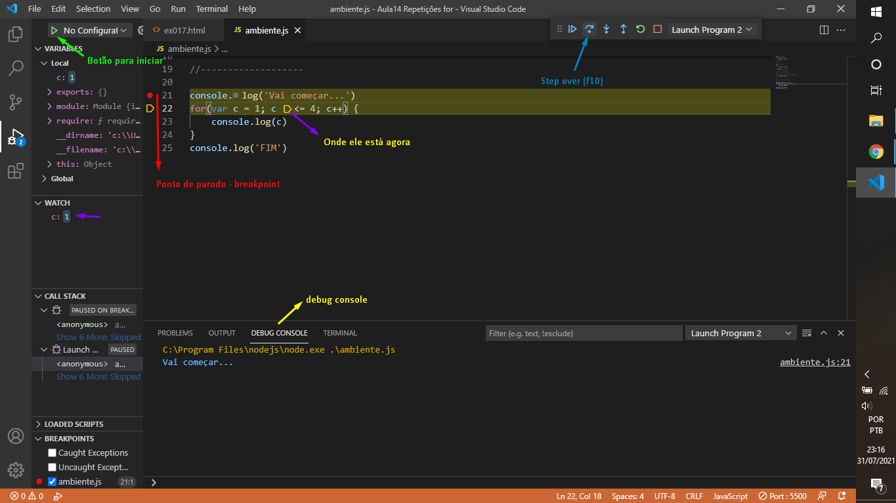
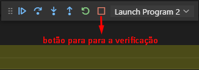

Agora temos uma estrutura de repetição: a estrutura de repetição com variável de controle.
Na imagem abaixo essa estrutura é representada pelo hexágono irregular, nesse hexágono são feitas três coisas: inicialização, teste lógico, incremento.Na primeira etapa ele faz a inicialização e o teste lógico. Se o teste for verdadeiro ele executa o bloco, feito o bloco ele volta pro início. Porém nessa volta, no momento do looping, ele faz também um incremento. Assim o teste lógico é feito mais uma vez, e sendo verdadeiro o looping acontecerá novamente até ele se tornar falso e segui o outro caminho.
O comando escrito:
No bloco podemos colocar qualquer estrutura vista nas aulas anteriores (while, do while, if)
Abaixo temos duas formas de fazer a ação, uma usando a estrutura while e outra usando o for:
Comparação na prática:
Pra ver o passo a passo do código abaixo acontecendo vamos em Run > Start Debugging (node.js). Assim abrimos nossa área de depuração.(debug) Podemos fixar bolinhas vermelhos nas linhas desejadas, elas são chamadas pontos de parada ou break points
Queremos monitar a variável c, pra isso colocamos a bolinha no começo do bloco, a setinha amarela diz exatamente o irá começar a execução na hora que dermos play, clicamos em run and debug, depois vamos na parte de watch clicamos no + . Ele pergunta qual expressão queremos monitorar, aí digitamos c (queremos monitorar a variável c).
Aparece a mensagem not available(não disponível no momento), para fazer ela aparecer temos que executar o programa apertando o play verde(> No Configuration - no canto superior esquerdo). Depois vemos com o Step over (f10) a execução de cada linha. Vemos na aba de debug console. Podemos ver cada estapa sendo executada clicando na setinha do step over.
 